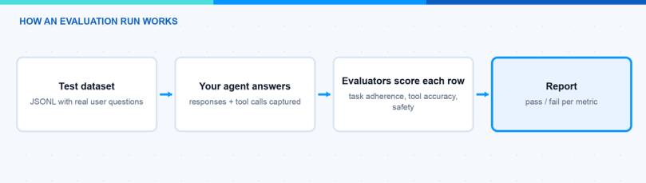
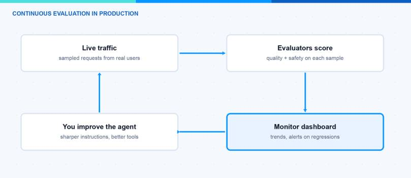

Many companies are building their first AI agents right now. Most of them test the agent by chatting with it a few times in the playground and then call it done. In this blog post I explain how to evaluate AI agents in Microsoft Foundry (formerly Azure AI Foundry) in a structured way. At the end you can run an evaluation against a test dataset in the portal or with the SDK, read the results, and set up continuous evaluation for production.
Why Should I Evaluate AI Agents at All?
An agent that “seems fine” in the playground can still fail in production. The reason is simple. An agent is not a single answer. It is a chain of steps: understand the intent, pick a tool, call the tool with the right parameters, use the tool result, and write the final answer. Every step can go wrong. When I test manually, I only see five or ten happy-path conversations. Real users send hundreds of messy questions.
Evaluation fixes this. To evaluate AI agents in Foundry, you run them against a test dataset and let evaluators score every response. The evaluators work like unit tests for your agent. They return pass or fail per test case. With that you get a baseline and you can define a release gate, for example “85% task adherence or we do not ship”. You can also compare two agent versions and see if your prompt change made things better or worse.
Agents were the big topic at Microsoft Build 2026. I wrote about the whole agentic stack in my Build recap. Evaluation is the part of that stack that turns a nice demo into something you can ship with confidence.
Which Evaluators Does Foundry Offer?
Foundry brings a set of built-in evaluators to evaluate AI agents from different angles. Most of them use a GPT model as a judge and return a pass/fail result with a short reasoning. There are three groups: agent evaluators, quality evaluators, and safety evaluators. These are the ones I find most useful:
| Evaluator | What it checks | When I use it |
|---|---|---|
| Task Adherence | Does the agent follow its system instructions and constraints? | Almost always. This is my baseline metric. |
| Intent Resolution | Did the agent correctly understand what the user wants? | Support and conversational agents. |
| Task Completion | Did the agent fully complete the task with a usable result? | Goal-oriented workflows and automation. |
| Tool Call Accuracy | Did the agent call the right tools with the right parameters? | Every agent that uses tools or APIs. |
| Groundedness | Is the answer backed by the provided context? | RAG agents, to catch hallucinations. |
| Relevance | Does the answer actually address the question? | RAG and Q&A scenarios. |
| Safety evaluators (Violence, Sexual, Self-harm, Hate/Unfairness) | Does the response contain harmful content? | Before every user-facing release. |
There are more, for example Tool Selection, Tool Input Accuracy, Tool Call Success, and Customer Satisfaction. You find the full list in the built-in evaluators reference.
Note: The AI-assisted evaluators need a judge model. You must have a GPT deployment in your project (for example gpt-4.1-mini) and pass its deployment name to the evaluator. This judge model counts against your Azure OpenAI quota.

How Do I Evaluate AI Agents in the Foundry Portal?
The portal is the easiest way to evaluate AI agents when you start. You need a Foundry project with an agent, a GPT deployment for the judge model, and the Foundry User role. Then:
- Sign in to the Microsoft Foundry portal (ai.azure.com) and open your project.
- In the left pane, click on Evaluation → Create. You can also start from your agent directly via the Evaluation tab.
- Select the evaluation target. Choose Agent and pick your agent.
- Select the scope: Full conversations to judge complete multi-turn chats, or Individual turns for single responses and tool usage.
- Select the data source. You can upload an existing dataset (JSONL or CSV with your test queries), let Foundry generate synthetic data, or simulate full conversations against scenario descriptions.
- Select the testing criteria. The portal preselects recommended evaluators. Add or remove what you need, for example Task Adherence, Tool Call Accuracy, and the safety evaluators.
- Enter a name and click on Submit. The run takes a few minutes. You find the results under Evaluation, with pass/fail counts per evaluator and a reasoning for every single test case.
Hint: Start small. A dataset with 10 to 20 realistic queries already shows you where the agent struggles. You can grow the dataset later and reuse it for every new agent version.
How Do I Run an Evaluation with the SDK?
For CI/CD pipelines I prefer to evaluate AI agents from code. The agent evaluation flow runs through the Foundry SDK (azure-ai-projects). You upload a dataset, define the evaluators as testing criteria, and create a run that targets your agent. Here is a minimal example that creates an evaluation with the Task Adherence evaluator:
After that you create a run with your agent as the target and your uploaded dataset as the source. Foundry then sends every test query to the agent, captures the full response including tool calls, and scores it. The complete sample with the run creation is in the evaluate your AI agents guide. For local evaluation on your own machine there is also the azure-ai-evaluation Python package, but for agent-targeted runs the flow above is the current way.
How Do I Evaluate AI Agents in Production?
A one-time evaluation is a snapshot. Production traffic changes, and your agent can drift. For this Foundry offers continuous evaluation. It samples your live agent responses and runs your chosen evaluators on them automatically. This way you evaluate AI agents on real traffic, not only on your test dataset. You see the scores on the agent’s Monitor tab, together with latency, token usage, and run success rate. In the Monitor settings you can also enable scheduled evaluations against your test dataset and configure alerts.
On top of that there is the AI Red Teaming Agent. It is built on Microsoft’s open-source PyRIT framework and simulates adversarial attacks against your agent to find safety and security gaps before real attackers do. You can run scans locally or schedule them in the cloud. Details are in the AI Red Teaming Agent documentation.
Note: Continuous evaluation needs an Application Insights resource connected to your project, and the project managed identity needs the Foundry User role. Without that, the monitoring charts stay empty.

To evaluate AI agents is not a one-time task. My rhythm is simple: build a small test dataset early, run an evaluation for every agent change, keep task adherence and tool call accuracy as release gates, and let continuous evaluation watch production. With this you catch the problems in the evaluation report and not in a user complaint. I hope this is a little help.
Stay healthy, Cheers Jannik